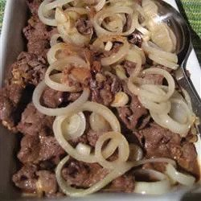

Bistek (Filipino Beef Steak)
Description
Filipino beef steak, or bistek, is a staple in many households in the Philippines. This must-try recipe is very delicious and simple to make. Serve with steamed white or brown rice or a salad.
Recipe by Mrs Lagdameo | Updated on September 20, 2022
Prep Time: 15 mins
Cook Time: 30 mins
Additional Time: 30 mins
Total Time: 1 hrs 15 mins
Ingredients
- ½ cup soy sauce (such as Kikkoman®)
- ¼ cup lime juice
- 3 cloves garlic, smashed
- 2 teaspoons white sugar
- 1 teaspoon fish sauce (Optional)
- ground black pepper to taste
- 1 pound beef steak, sliced 1/4-inch thick
- 2 tablespoons vegetable oil, divided, or as needed
- 4 potatoes, cut into wedges (Optional)
- 1 large onion, cut into rings
- ⅛ cup water (Optional)
Steps
- Combine soy sauce, lime juice, garlic, sugar, fish sauce, and pepper in a bowl. Taste and adjust to your liking. Add sliced beef, making sure it is coated evenly. Marinate for at least 30 minutes or up to 1 hour.
- Heat 1 tablespoon oil in a wok or pan over medium-high heat. Fry potatoes in the hot oil until the edges turn golden brown, 7 to 10 minutes. Transfer to a plate.
- Heat remaining oil in the same pan over medium-high heat and fry onions until edges turn brown, 7 to 10 minutes. Transfer to the same plate.
- Heat the same pan over medium-high heat. Reserve marinade and fry beef in batches, adding more vegetable oil if necessary, until browned and no longer pink in the centers, 5 to 7 minutes. Transfer to the plate and continue with remaining beef.
- Pour reserved marinade into the pan with water to deglaze, scraping up browned bits from the bottom of the pan using a wooden spoon. Taste and adjust seasonings. Return beef back to the pan with some onion, leaving remaining onion for garnish; reduce heat and let simmer until sauce has thickened, 7 to 10 minutes.
- Slide beef and sauce onto a serving plate. Garnish with remaining onion. Place potatoes on the side and serve.
Tips
You can use lemon or calamansi juice instead of lime if preferred.
You can make the marinade/sauce saltier or more sour depending on your taste by adding soy sauce or lime juice. Adjust as necessary.
Original Recipe